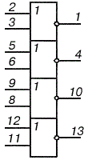
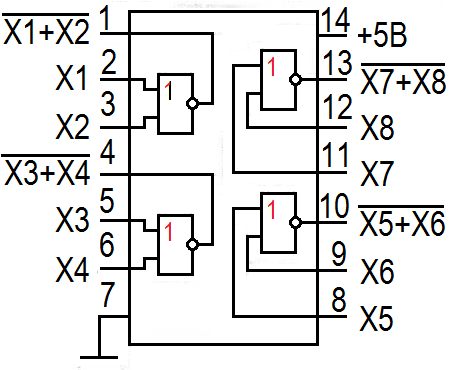
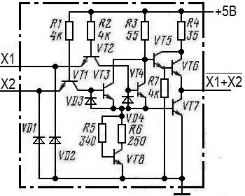

Микросхема К155ЛЕ1
Микросхема К155ЛЕ1 (КМ155ЛЕ1) представляет собой четыре логических элемента 2ИЛИ-НЕ. Принципиальная схема одного элемента микросхемы К155ЛЕ1 приведена на рисунке 3.
Корпус микросхемы К155ЛЕ1 (7402) типа 201.14-1, масса около 1 грамма и у микросхемы КМ155ЛЕ1 (7402) корпус типа 201.14-8, масса около 2,2 грамма.



Таблица 1
| Параметр | Значение |
|---|---|
| Номинальное напряжение питания | 5В±5% |
| Выходное напряжение низкого уровня | ≤0,4 В |
| Выходное напряжение высокого уровня | ≥2,4 В |
| Входной ток низкого уровня | ≤-1,6 мА |
| Входной ток высокого уровня | ≤0,04 мА |
| Входной пробивной ток | ≤1 мА |
| Ток потребления при низком уровне выходного напряжения | ≤27 мА |
| Ток потребления при высоком уровне выходного напряжения | ≤16 мА |
| Потребляемая статическая мощность на один логический элемент при низком уровне выходного напряжения | ≤36 мВт |
| Потребляемая статическая мощность на один логический элемент при высоком уровне выходного напряжения | ≤21 мВт |
Зарубежные аналоги
Зарубежным аналогом микросхем К155ЛЕ1, КМ155ЛЕ1 является микросхема 7402.